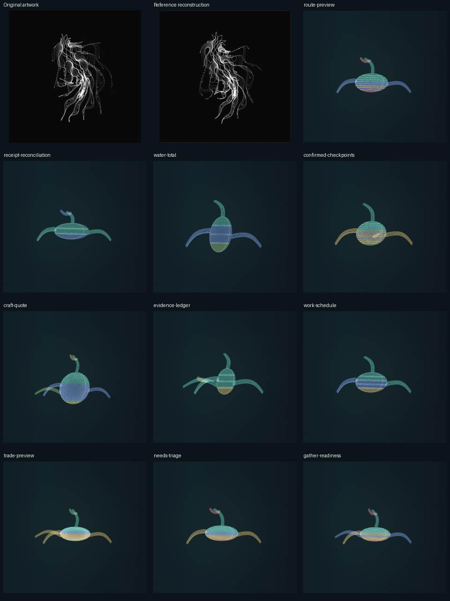
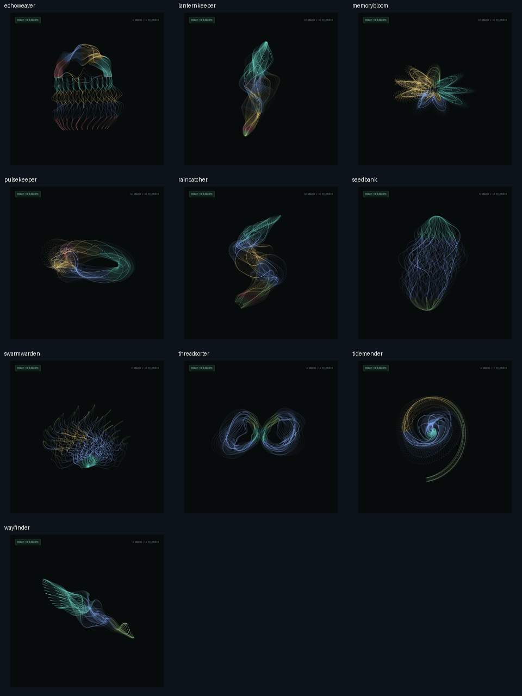
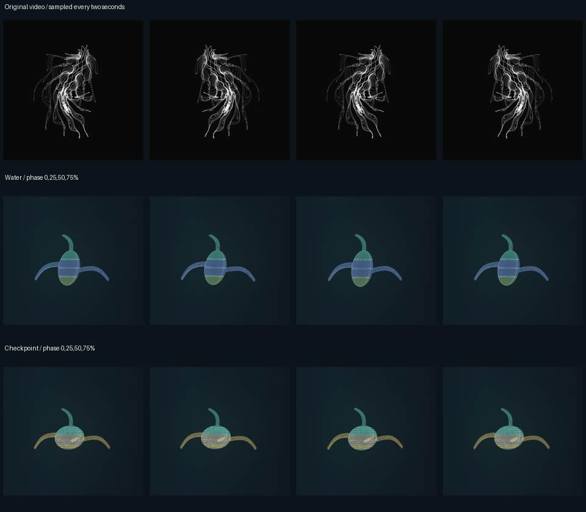

Twelve independent reviews
The homepage falls short of the original.
Every reviewer judged the current homepage below the reference’s beauty. They found the archived gallery partly comparable: its flowing lines and distinct families come closer, while light and motion still need work.
Three GPT reviewers, three Gemini 3.1 Pro High reviewers, three Grok 4.7 xhigh reviewers and three Opus 5.5 High reviewers compared the original with both presentations. Model provenance and evidence limits.
Look at the difference.
The original and its local reconstruction occupy the first two panels. The ten remaining panels show the homepage programs without selection dimming, at the same fixed phase.

The archived gallery comes closer.
These ten families have more varied silhouettes and fine translucent curves. They remain separate experimental sources and renderings.

Pose changes need a wider range.

Phase stills do not measure smooth playback. Scores are subjective judgments; the original is one artwork and collection variety is a different question. Original artwork by @yuruyurau, from the existing local reference lab.
What the council recommends
- Author asymmetric folded and branching bodies with operation-owned tissue and distinct silhouettes.
- Give light a density hierarchy: bright crossings, translucent strands and sparse trailing dots.
- Author larger, coherent local deformation and traveling folds, then test actual playback.
- Frame the complete pose envelope with a consistent camera and a dark specimen ground.
Lighting and framing can be view changes. New geometry and gestures need new source identities or an explicit visual profile; editing a frozen sampler is not a compatible cosmetic fix.
Read the synthesis and acceptance criteria. Passing execution tests does not establish comparable beauty.
Read all twelve reports
- GPT · reviewer 1
- GPT · reviewer 2
- GPT · reviewer 3
- Gemini 3.1 Pro High · reviewer 1
- Gemini 3.1 Pro High · reviewer 2
- Gemini 3.1 Pro High · reviewer 3
- Grok 4.7 xhigh · reviewer 1
- Grok 4.7 xhigh · reviewer 2
- Grok 4.7 xhigh · reviewer 3
- Opus 5.5 high · reviewer 1
- Opus 5.5 high · reviewer 2
- Opus 5.5 high · reviewer 3
Functional audit implementation checklist · Run the programs